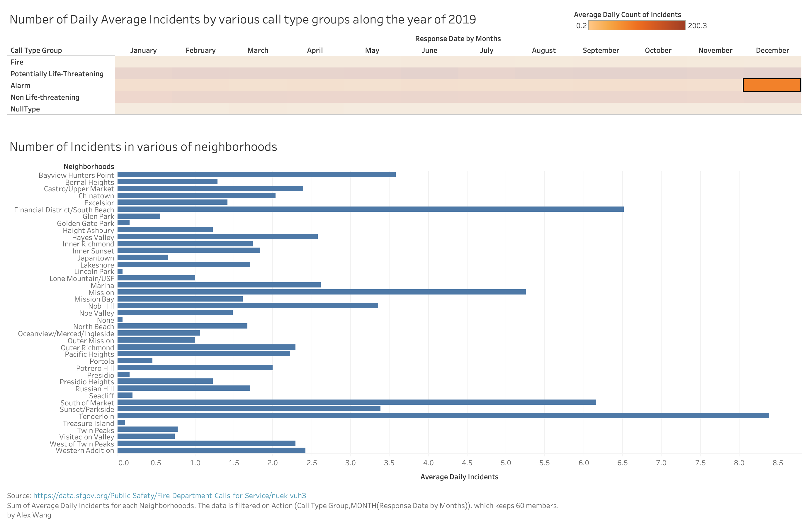
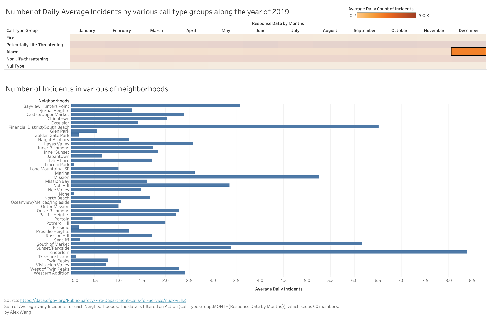

Distribution of type of calls in months and in neighborhoods along the year of 2019
Heatmap + bar chart by Alex Wang
Data
- Call type group: Call types are divided into four main groups: Fire, Alarm, Potential Life Threatening and Non Life Threatening.
- Response Date by Months: Date and time this unit acknowledges the dispatch and records that the unit is en route to the location of the call.
- Neighborhoods: Neighborhood District associated with this address, boundaries available here: https://data.sfgov.org/d/p5b7-5n3h
- Number of Incidents: Count of incidents calculated by checking unique incident id's.
Wrangling
The dataset is filtered and grouped with the filter function on the original website, and the range was chosen to be from January 2019 to December 2019. Also the data are grouped by incident id, call type group, response date&time, and neighborhoods.
For drawing the heatmap, a call-type-group map was created to better fit the format of counts of incidents rather than raw data given in the csv file. The new map stores by each call type group as keys and an array of 12 month's incidents count as values.
For drawing the barchart, a bar-chart map was created since the bar chart looks for neighborhoods as keys. For each neighborhood, there are 5 call type groups as keys and each call type group links to a 12-month-value array as value.
Visualizations
Prototype by Tableau

Implementation in D3.js
Interpretation: data encoding
In the heatmap, the color diverging in boxes indicates the average daily count of unique incidents, the x-axis of heatmap is the response date and time of SFFD's action in months along the year of 2019, and y-axis is the call type.
In the bar chart, each bar represents a neighborhood and the length of bar is the count of incidents. The longer the bar, the more incidents were in that neighborhood. The bar charts are not sorting by high-to-low values because it would be too much movements when each click of heatmap-block would cause a change: since there are 42 neighborhoods and fixed position of them would help the reader locate specific neighborhood more quickly. Also, for the same neighborhood readers could have a chance to see that it might be leading in one call type group, but not in another.
Instruction: how to interact
For heatmap, readers can click on blocks on the heatmap to see the data for a specific month and a specific call type group. When a block is chosen, the bar chart would change according to the month and call type group and show values of every neighborhood.
For bar chart, when hovering one bar, that bar would be "highlighted" and its value would show.
Discussion: findings
Firstly, in the heatmap, we could see the comparison between months to know that how the fire calls distributed: there is actually no obvious huge difference of numbers of fire incidents among months. Therefore it seems that fires are not more likely to happen in some seasons or holidays, and firefighters are not having obvious "busy season" according to information we have so far.
Moreover, take the example of Tenderloin, it often had most of calls in potentially-life-threatening, but it was not always the one with most fire calls, therefore it is possible that the data could be referable when SFFD is deploying resource and considering how to prepare different kinds of teams and tools according to incidents that are more likely to happen in specific neighborhoods.
Inspiration:
https://blockbuilder.org/sjengle/22051097a8090fa227cbd80cdc2bad03
https://blockbuilder.org/sjengle/47c5c20a18ec29f4e2b82905bdb7fe95
https://observablehq.com/@sjengle/interactivity-lab?collection=@sjengle/interactive-scatterplot
Progress from feedbacks
Peer feedbacks on prototype demonstration and my changes according to them:
Some peer mentions that he/she does not quite clear about the theme, so
//Planned interactivity
When clicking on specific box on heatmap, the relavent bar chart for that call type at that time for all neighborhoods would show.

 


Connection to the project theme
This visualization explore several situation about works in SFFD. Firstly it shows how different call types take parts in all number of calls, so that we could know what kind of works do the SFFD do. For example, we would know that fire calls is not taking the major part of calls to SFFD. Also it shows the call type distributions along the year, and we could know that the calls to SFFD is not dependent on season or month or certain holidays, etc. Furthremore, if we switch between different data types, the specific number of calls for the same month on neightborhood would be different, so it could be potentially useful for SFFD to deploy different resource near different neighborhood, etc.